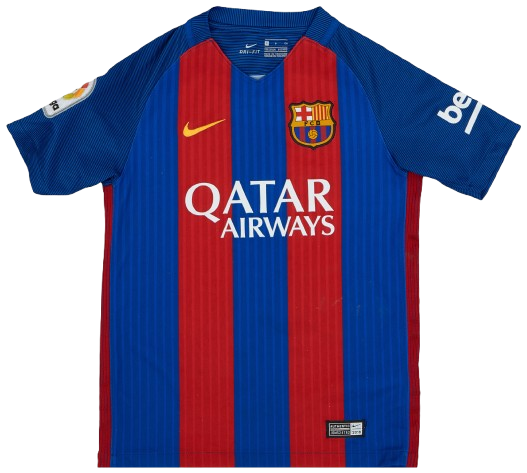
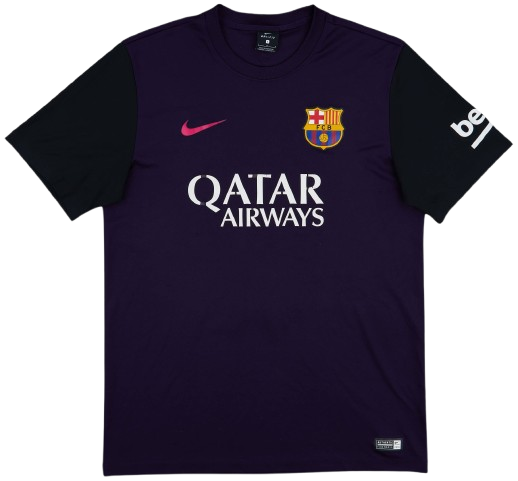
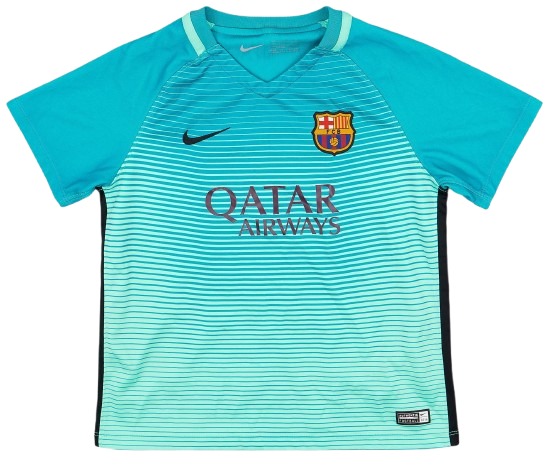

Home Kit

A classic blaugrana home kit with a clean stripe layout—simple, sharp, and instantly Barça.
The 2016/17 season was the final year of Luis Enrique’s tenure as manager of FC Barcelona. Barcelona continued to rely on the legendary attacking trio of Lionel Messi, Luis Suárez, and Neymar, who remained one of the most feared front lines in world football. Although Barcelona finished 2nd in La Liga, just three points behind Real Madrid, the season produced unforgettable moments, including Messi’s iconic last-minute winner in the 3–2 Clásico at the Santiago Bernabéu, where he celebrated by holding his shirt up to the Madrid crowd. Barcelona also produced one of the greatest comebacks in football history during the UEFA Champions League, overturning a 4–0 first-leg deficit against Paris Saint-Germain with a dramatic 6–1 victory at Camp Nou, known as La Remontada. However, their European run ended in the quarter-finals against Juventus. Barcelona finished the campaign on a high note by defeating Deportivo Alavés 3–1 in the Copa del Rey Final, securing their third consecutive Copa del Rey and giving Luis Enrique a trophy in his final match as manager.

A classic blaugrana home kit with a clean stripe layout—simple, sharp, and instantly Barça.

A bold, darker away look with high contrast accents—one of the most striking alternates of the era.

A bright third kit with modern line detailing—built for contrast while keeping the club identity.